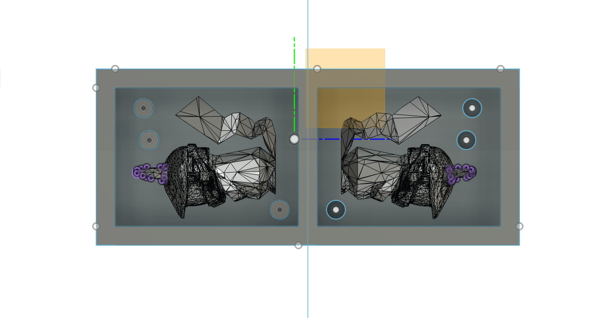
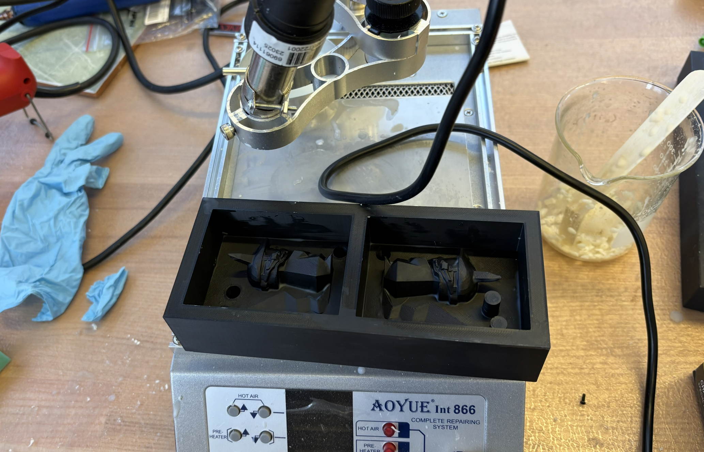
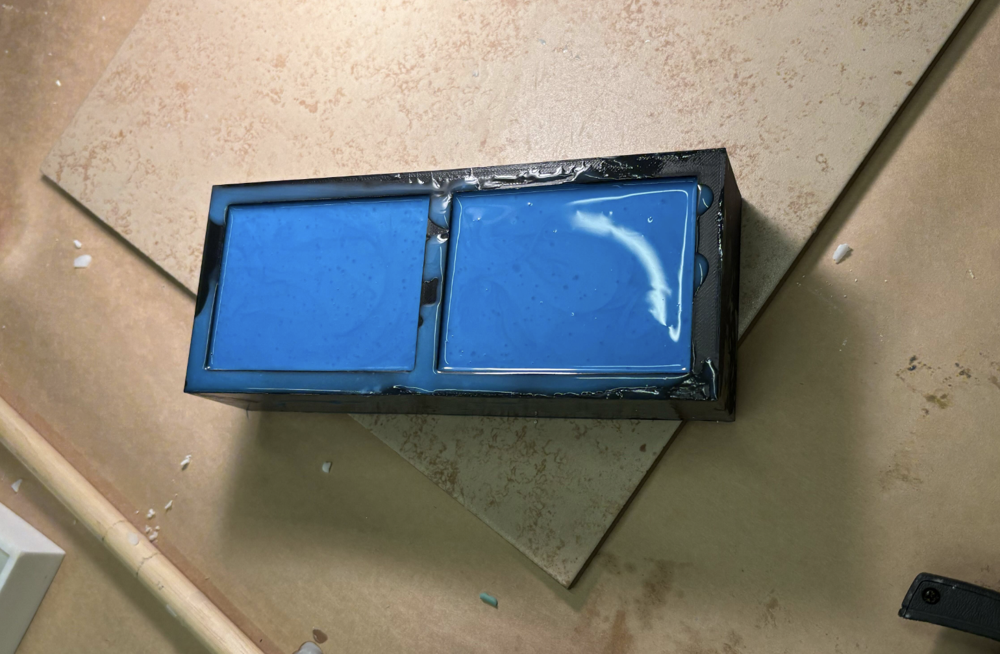
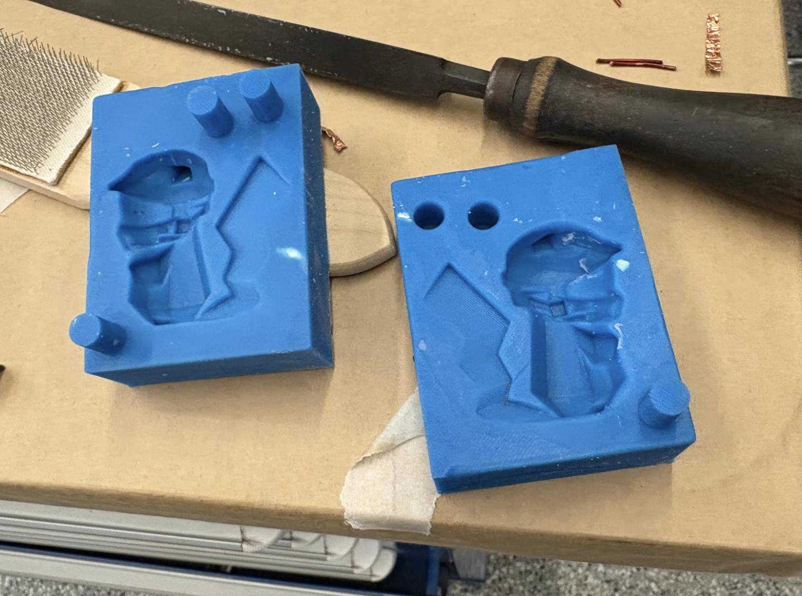
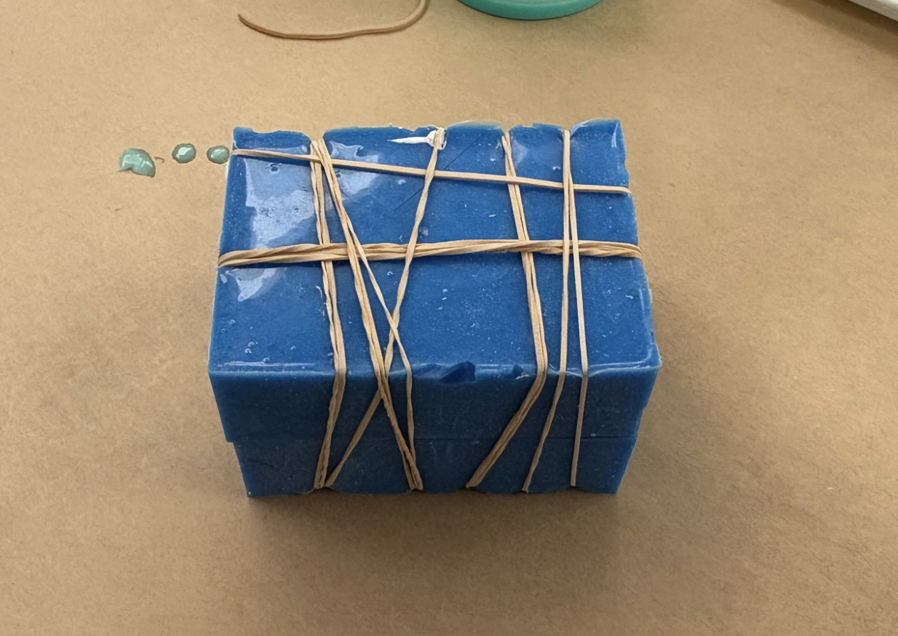
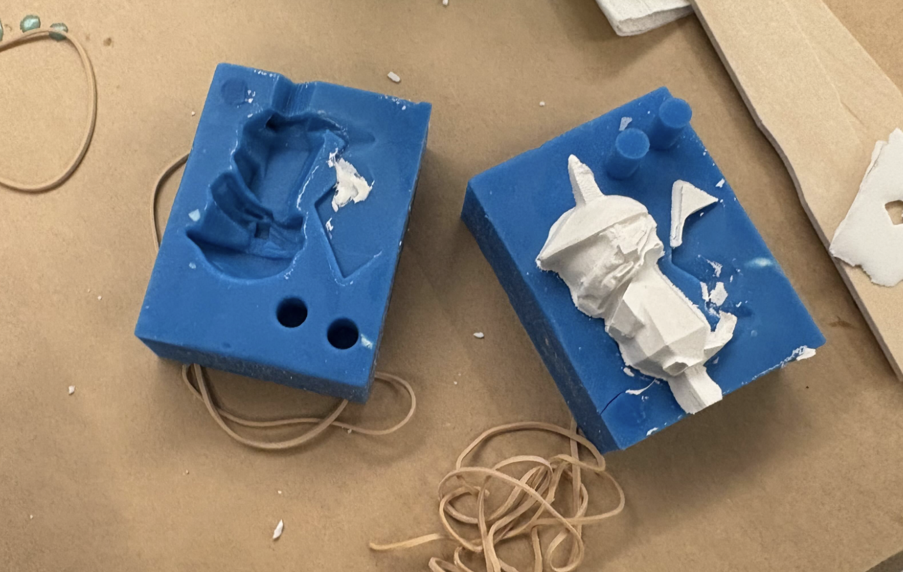
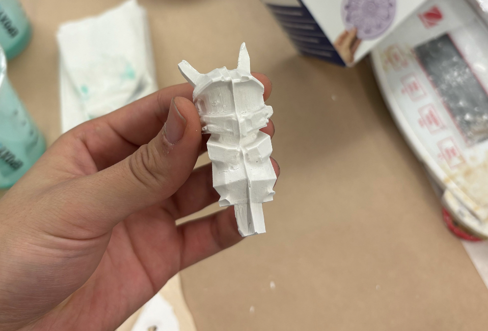
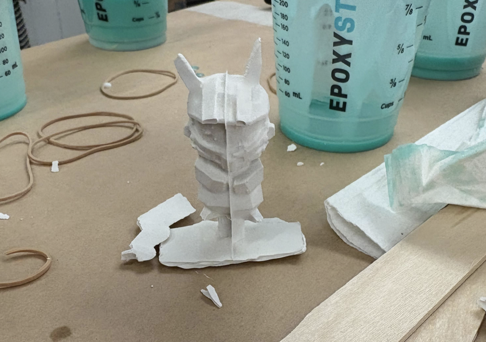

Week 10: Molding and Casting
This week we did molding and casting. It involves making a negative (mold) to produce positives (parts). The mold captures detail way better than you can fabricate directly, and lets you use materials you can't machine.
The process involves first making the original positive - either milling it from machinable wax or 3d print it. I ended up deciding to 3d print it because it wass the fastest option. To do so, you need to upload an .stl file that (preferably) has less than 10k triangles to make the Fusion processing easier. After converting it into a component, splitting it in half, and aligning it on the same plane, you can then 3d print it.

Since it is a 3d print, there's going to be some sort of layers of PLA that would show up in the mold. I used melted besswax to fill in some of the corners and smooth out the layered plastic.


Then, you mix the Part A and Part B (Smooth-on Oomoo) of the silicone mold into the 3d print. I accidentally used a slightly firmer mix, which would have been harder to work with given my model had an ear that has a slght overhang.


I let it cure under the heat lamp for about 2-ish hours. It was really firm afterwards and took quite some effort to remove from the print mold. Using popsicle sticks and a flat-head screwdriver, I was able to pry it out. There was a small tear in one of the ears (which was better than I expected) but otherwise it cam ouet pretty well.

Then, I casted using hydrocal/hydrostone, which is a gypsum plaster made from mising 100 parts powder with ~10-20 parts water. It's pretty easy to work with and can be sanded down after it dries.

I used many rubber bands to hold the two molds together, and had cut a hole at the bottom of the pikachut to pour the plaster in.


This first cast was missing some details and the tail was just never filled with the plaster. This was kind of expected because the sort of turn into the tail area was very sharp and hard to reach.

This version was a bit better: I filled in the tail area with some plaster before putting the two molds together, but it still detached from the rest of the budy at extraction.